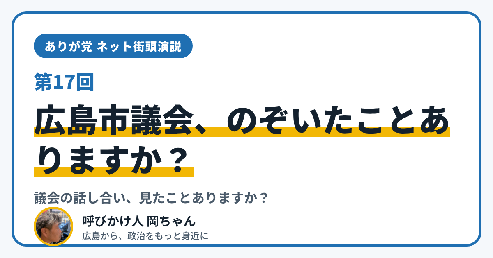

ありが党 ネット街頭演説 第17回｜広島市議会、のぞいたことありますか？

こんにちは、ありが党の呼びかけ人、岡ちゃんです。今日のネット街頭演説のテーマは「議会をのぞいてみる」です。
市の大事なことは、市議会で話し合われています。でも、議会でどんな話がされているのか、見たことはありますか？ 「なんだか遠い場所」「自分には関係ない」と感じている人も、多いのではないでしょうか。
広島市議会は、だれでも傍聴できます
広島市議会では、「何人も傍聴することができる」ことが、本会議の傍聴規則や委員会の傍聴要領にはっきり書かれています。本会議だけでなく、委員会も傍聴できます。
耳が聞こえにくい人のためのしくみもあります。本会議や委員会を傍聴するとき、事前に申し込むと、手話通訳者や要約筆記者を手配してもらえます。費用はかかりません。申し込みは、傍聴したい日の3日前まで（土日・祝日をのぞく）に、申込書をファクスかメールで送ります。くわしくは、広島市議会事務局の総務課（電話 082-504-2434）に聞くことができます。
家にいながら、ネットで見ることもできます
議会まで出かけるのがむずかしい人もいると思います。広島市議会には、インターネットの「議会中継」のページや、YouTubeの動画チャンネルがあります。本会議の生中継には、手話通訳もついています。
傍聴の受付の場所や時間、車椅子で入れる席などのくわしいことは、市議会のホームページで確かめたり、事務局に問い合わせたりしてみてください。
僕が思うこと
僕は、政治を身近にする第一歩は、「どこで、だれが、何を話しているのか」を知ることだと思っています。議会は、本来、市民みんなに開かれた場所です。
僕は電動車椅子で暮らしています。だからこそ、出かけなくても見られる、耳が聞こえにくくても参加できる、そんな「開かれ方」がもっと広がるといいなと思っています。どうしたら、だれでも気軽に議会をのぞけるようになるのか、みんなで考えたいです。
あなたは、議会を見たことがありますか？ 「こうだったら見やすいのに」など、どんな声でも大歓迎です。InstagramのDM（@ayu19841002）や、ありが党のページから、あなたの暮らしの声を聞かせてください。
ありが党は、まだ僕ひとりから始めたばかりです。政治をもっと身近にしたいと思う方、一緒に考えてくれる仲間を探しています。InstagramのDM（@ayu19841002）で気軽に声をかけてください。